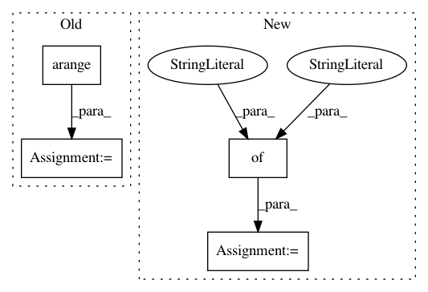

bfef95ab9f35e6d17a4114321a38b11fc1b7d908,tutorials/rhythm/plot_LaggedCoherence.py,,,#,31
Before Change
//////////////////////////////////////////////////////////////////////////////////////////////////////////////////////////////////////////////////////////////////////////////////////////////////////
samp_burst = np.arange(1000)
samp_noburst = np.arange(1000, 2000)
lag_coh_burst = compute_lagged_coherence(sig[samp_burst], fs, f_range)
lag_coh_noburst = compute_lagged_coherence(sig[samp_noburst], fs, f_range)
After Change
times = create_times(n_seconds_burst + n_seconds_noise, fs)
// Simulate a signal component with an oscillation
components = {"sim_powerlaw" : {"exponent" : 0},
"sim_oscillation" : {"freq" : 10}}
s1 = sim_combined(n_seconds_burst, fs, components, [0.1, 1])
// Simulate a signal component with just noise
s2 = sim_powerlaw(n_seconds_noise, fs, 0, variance=0.1)
In pattern: SUPERPATTERN
Frequency: 3
Non-data size: 4
Instances
Project Name: neurodsp-tools/neurodsp
Commit Name: bfef95ab9f35e6d17a4114321a38b11fc1b7d908
Time: 2020-03-17
Author: tdonoghue@ucsd.edu
File Name: tutorials/rhythm/plot_LaggedCoherence.py
Class Name:
Method Name:
Project Name: DistrictDataLabs/yellowbrick
Commit Name: 5aafd55460a3a00204f31837983afa67faa1c7be
Time: 2019-06-11
Author: 43993586+naresh-bachwani@users.noreply.github.com
File Name: yellowbrick/classifier/class_prediction_error.py
Class Name: ClassPredictionError
Method Name: draw
Project Name: WZBSocialScienceCenter/tmtoolkit
Commit Name: 9def69a805132ff7549744b5b30a2fa7531fa405
Time: 2019-06-12
Author: markus.konrad@wzb.eu
File Name: tmtoolkit/preprocess/_tmpreproc.py
Class Name: TMPreproc
Method Name: tokens_dataframe